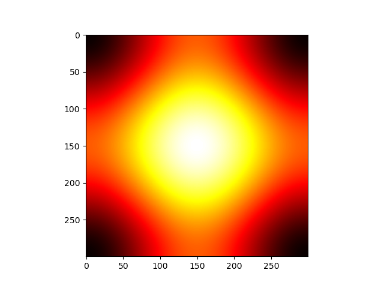

Note
Click here to download the full example code
Colormaps alter your perception¶
Here I plot the function
\[f(x, y) = \sin(x) + \cos(y)\]
with different colormaps.
import numpy as np
import matplotlib.pyplot as plt
x = np.linspace(-np.pi, np.pi, 300)
xx, yy = np.meshgrid(x, x)
z = np.cos(xx) + np.cos(yy)
plt.figure()
plt.imshow(z)
plt.figure()
plt.imshow(z, cmap=plt.cm.get_cmap('hot'))
plt.figure()
plt.imshow(z, cmap=plt.cm.get_cmap('Spectral'),
interpolation='none')
# Not needed for the Gallery.
# Only for direct execution
plt.show()
- 
You can define blocks in your source code with interleaving prose.
print(("This writes to stdout and will be",
" displayed in the HTML file"))
Out:
('This writes to stdout and will be', ' displayed in the HTML file')
Total running time of the script: ( 0 minutes 0.285 seconds)